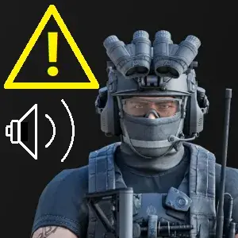

Addon
Black Div spawn notifier
- Downloads
- 5,660
A notification pops up at bottom right when Black Div spawn.
“Black Division have arrived, they’ll catch you!”
After spawn, you can press O to get reminded again.
No any settings. Need WTT-Black Div
Version
1.0.1
Parent mod 1.1.1
5,660 downloads3.2 KB
Working with 1.1.1
This use bottype ID to identify the spawn.
BlackDiv is currently 848420~848423.
VirusTotal: report 1